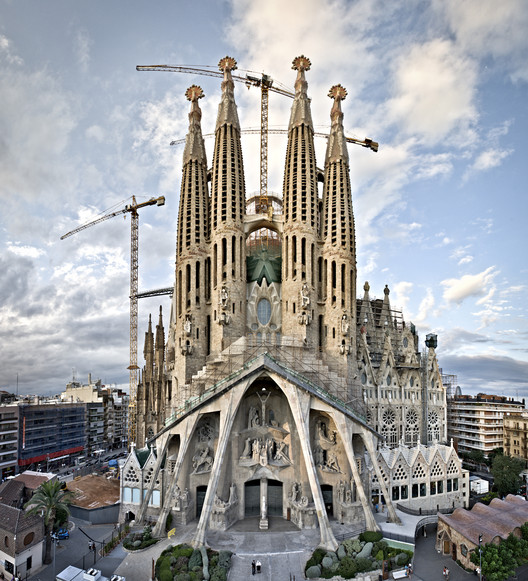
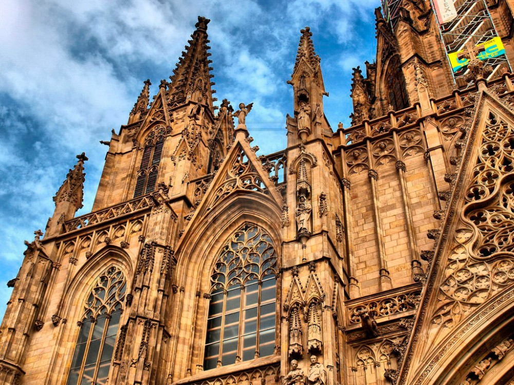

Barcelona, a capital da Catalunha e uma das cidades mais icônicas da Espanha, é famosa por sua arquitetura deslumbrante, cultura vibrante e rica história. A cidade é um verdadeiro museu a céu aberto, com obras-primas de Antoni Gaudí, como a Sagrada Família e o Parque Güell, que atraem milhões de visitantes todos os anos. Além de sua arquitetura única, Barcelona oferece praias deslumbrantes, uma cena gastronômica diversificada e uma vida noturna animada, tornando-se um destino imperdível na Europa.

Na imagem acima, podemos ver a icônica Sagrada Família, uma das obras mais famosas de Antoni Gaudí, que ainda está em construção após mais de 100 anos. A basílica é conhecida por sua arquitetura única e detalhes intrincados.

Na imagem acima, podemos ver o Arco do Triunfo, outro ícone de Barcelona, que homenageia aqueles que lutaram e morreram pela França durante a Revolução Francesa e as Guerras Napoleônicas.

Na imagem acima, podemos ver a Catedral de Notre-Dame, um dos exemplos mais notáveis da arquitetura gótica, famosa por seus vitrais deslumbrantes e sua história rica, incluindo eventos como a coroação de Napoleão Bonaparte.
Assim como Amsterdã, Berlim também é conhecida por sua arte e cultura.
Quer saber mais sobre Barcelona? Clique aqui